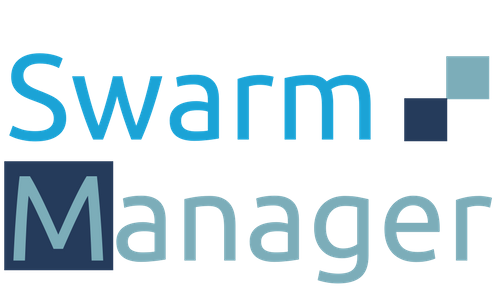

<mat-sidenav-container class="outer-container">
  <mat-sidenav #sidenav mode="{{getNavbarMode()}}" opened="{{!screenService.isSmall()}}"  class="navbar-container">
    <a mat-button style="height: 0; position: absolute;"> <!-- 'absorbs' the behavior --></a>
    <div class="logo-area">
      <div class="logo">
        
      </div>
      <div class="user">
        <app-user (menuClick)="closeNavbar()"></app-user>
      </div>
      <div class="swarm-select-container">
        <div class="swarm-select">
          <mat-form-field *ngIf="user && user.isVisitor()">
            <mat-select placeholder="Swarm" [(value)]="selectedSwarm" (change)="selectSwarm($event)">
              <mat-option *ngFor="let swarm of swarms" [value]="swarm.id" (click)="closeNavbar()">
                {{swarm.name}} ({{swarm.apiVersion}})
              </mat-option>
            </mat-select>
          </mat-form-field>
        </div>
      </div>
    </div>
    <div class="navbar">
      <div class="navbar-option" (click)="closeNavbar()" routerLink="{{navigationItem.link}}" *ngFor="let navigationItem of navigationItems" routerLinkActive="active">
        <div class="navbar-option-text">
          <i class="material-icons icon">{{navigationItem.icon}}</i>
          <span class="text">{{navigationItem.name}}</span>
        </div>
      </div>
    </div>
  </mat-sidenav>
  <mat-toolbar color="accent" class="header-container">
      <i *ngIf="screenService.isSmall() && !isBackArrowActive()" class="material-icons icon navbar-open" (click)="sidenav.open()">menu</i>
      <i *ngIf="!screenService.isSmall() || isBackArrowActive()" [class]="showBackArrow()" (click)="goBack()">arrow_back</i>
      <span class="text">{{getSelectedViewName()}}</span>
  </mat-toolbar>
  <app-progress-bar></app-progress-bar>
  <main class="shell-content" (swiperight)="swipe($event.type)">
    <div class="content">
      <router-outlet></router-outlet>
    </div>
  </main>
</mat-sidenav-container>
